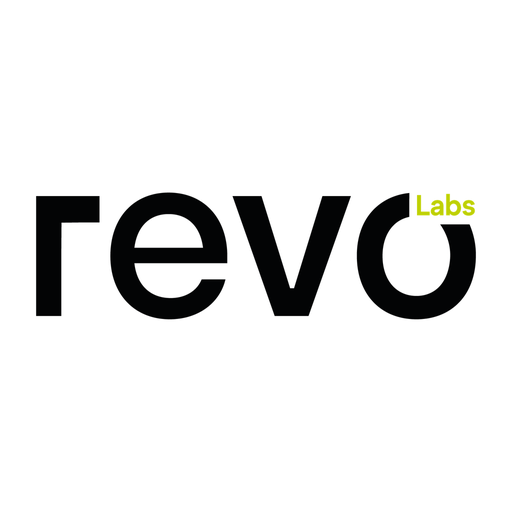

Escribe arriba el usuario de TikTok (por ejemplo miempresa, el @ ya está puesto) y pulsa Agregar.
O abre tus cuentas guardadas desde ⭐ Favoritas.
Atajos: 1–9 escuchar ese live · F ampliar · M silenciar/activar todo · R recargar todo · G guías · T modo TV · F11 pantalla completa · Ctrl+K escribir en la barra

Monitor de Lives de TikTok
Versión
© 2026 Revo Labs. Uso interno.
Atajos: 1–9 escuchar un live · F ampliar · M silenciar/activar todo · R recargar todo · G guías de encuadre · T modo TV · F11 pantalla completa · Ctrl+K escribir en la barra · Esc salir
Arrastra un live desde ⠿ para cambiarlo de lugar.